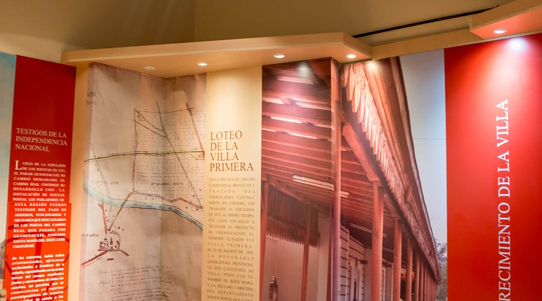
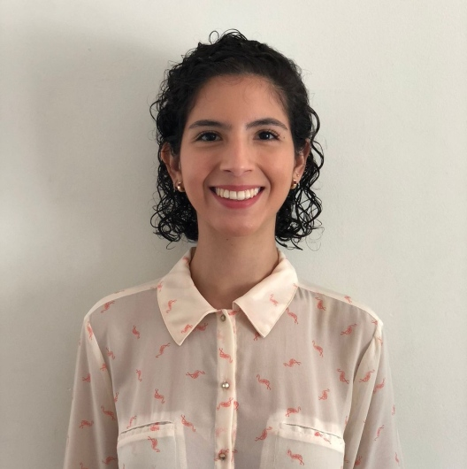

Nuestra Historia
Descubrí la historia del Museo de la Ciudad Luis Biondi, ícono cultural de Jesús María
Orígenes
El Museo de la Ciudad Luis Biondi abrió sus puertas en 2012. Está ubicado en la calle Ingeniero Olmos 453 y ocupa una casona histórica de principios del siglo XX, que conserva pisos, aberturas y techos originales.


Línea de Tiempo
2012
Se crea oficialmente el Museo de la Ciudad Luis Biondi por Ordenanza N° 3245/2012, para preservar el patrimonio cultural de Jesús María.
Siglo XIX / XX
La casona que alberga el museo data de fines del siglo XIX o principios del XX. Conserva pisos, aberturas y techos originales, y su diseño corresponde al estilo italianizante.
2015
Por Ordenanza N° 3581 del 12 de noviembre de 2015, el Concejo Deliberante estableció que el 15 de enero quede como fecha conmemorativa vinculada al museo.
Actualidad
Hoy el museo continúa activo con exposiciones, talleres y visitas guiadas. Sus salas muestran la historia local desde los pueblos originarios hasta las instituciones contemporáneas.
Galería Histórica


Recursos Culturales
Archivo Documental
El museo resguarda documentos, registros y fotografías históricas de Jesús María, disponibles para consulta en sala.
Actividades
Se organizan charlas, capacitaciones y pequeños conciertos en el auditorio del museo.
Enlaces Relacionados
Conectá con otras instituciones culturales de Jesús María y la región.
Ver más museosTestimonios de Expertos
Dr. Carlos Mendoza
Historiador y profesor universitario
"El Museo Luis Biondi es un referente invaluable para entender la historia local. Su colección refleja perfectamente la evolución de Jesús María."

Lic. Ana García
Arquitecta y conservadora
"La preservación del patrimonio cultural que realiza este museo es excepcional. Cada visita revela nuevos aspectos de nuestra identidad."
¿Eres investigador o especialista? Contáctanos
Espacios del Museo
Muestra Permanente
Objetos, documentos y fotografías que narran la historia de Jesús María desde sus orígenes hasta la actualidad.
Archivo Documental
Espacio destinado a la preservación de documentos históricos locales, abierto a la consulta para investigadores y público interesado.
Auditorio
Espacio multifuncional donde se realizan muestras temporales, capacitaciones, presentaciones culturales y conciertos.
Información Técnica
Edificio
- Origen: Antigua casona de la familia Biondi
- Época: Construcción de fines del siglo XIX
- Valor: Declarada patrimonio histórico de Jesús María
- Uso actual: Museo de la Ciudad y sede de la Dirección de Cultura
Colección
- Muestra permanente: Objetos y documentos de la historia local
- Muestras temporales: Exposiciones con distintas temáticas
- Archivo documental: Fondos históricos de la ciudad
- Espacios: Auditorio para actividades culturales y educativas